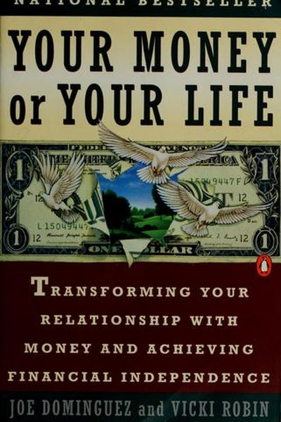

Library › Money & Finance
Your Money or Your Life — Summary & Key Lessons

The book that birthed the FIRE movement — 9 steps to transforming your relationship with money and achieving financial independence.
📖 OPEN THE FULL INTERACTIVE BREAKDOWN →🌐 Read it in Hindi, Hinglish, Gujarati, Tamil & 22 more languages — free, with audio.
💡 The Big Idea
Joe Dominguez retired at 31 on $66,000 of savings; Vicki Robin turned his system into the book that launched the FIRE (Financial Independence, Retire Early) movement. The core reframe: money is life energy — you trade your hours for it, so every purchase is a purchase of your time. Their 9-step program moves from tracking every rupee to computing your real hourly wage, to the 'wall chart' that makes your spending visible, to the point where your passive income exceeds your expenses — financial independence.
🧠 The 6 Key Lessons
Lesson 1: Money Is Life Energy
The New Road Map
The book's foundational idea: money isn't abstract — it's the life energy you trade for it. Every hour of work you sell is an hour of your one and only life. This reframe changes every purchase: a ₹2,000 gadget isn't ₹2,000 — it's the 10 hours of your life you spent earning it. Spend money and you're spending yourself.
📖 Example: Robin's exercise: compute your real hourly wage (after taxes, commuting, work clothes, decompression time) and suddenly the 'cheap' impulse buy reveals its true cost in hours of your life. One woman realized her daily takeout cost her two hours of work — for… Read the full example →
⚡ Do this: Compute your REAL hourly wage: monthly take-home ÷ (work hours + commute + prep + decompression). Next purchase, ask: 'Is this worth X hours of my life?'
Lesson 2: Track Every Rupee
The 9 Steps
Step one of the program: total awareness — track every single rupee you spend, every day, without judgment. Most people resist because tracking reveals uncomfortable truths; that discomfort is precisely the point. You can't transform a relationship with money you refuse to look at.
📖 Example: The authors describe people who 'didn't know where it went' — until the 30-day tracking exercise showed them: the small daily leaks (chai, snacks, subscriptions, impulse apps) added up to more than they saved in a year. Read the full example →
⚡ Do this: Carry a tiny notebook (or notes app) for 30 days: record every rupee, no exceptions, no judgment. At the end, total it by category and stare at the truth.
Lesson 3: The Wall Chart: Make Spending Visible
The Wall Chart
Step three: plot your income and expenses on a big wall chart every month — the 'wall chart' that became FIRE's symbol. Visibility changes behavior: a line that keeps crossing the income line is a life you're spending faster than you're earning it. The chart replaces willpower with awareness.
📖 Example: Robin describes the shock of seeing month after month of spending lines above the income line — the moment the chart turned 'I'm fine' into 'I'm slowly going backwards.' The chart's trend line became the most honest financial advisor they ever had. Read the full example →
⚡ Do this: Create your wall chart (paper or spreadsheet): monthly income line and expense line for the last 12 months. Where does the trend point?
Lesson 4: The Crossover Point: Financial Independence
The Crossover Point
The goal is the crossover: the month your investment income exceeds your expenses. Before the crossover, you work for money; after it, money works for you. The authors show that by shrinking expenses and growing savings, ordinary earners reach the crossover in a decade or two — not in some distant retirement fantasy.
📖 Example: Dominguez reached the crossover at 31 on a modest salary by keeping expenses tiny and investing aggressively; Robin followed. Their point: the crossover isn't about income level — it's about the gap and the discipline. Read the full example →
⚡ Do this: Compute your current crossover date: savings rate → years to independence (rough rule: 30% saved ≈ 25 years; 60% ≈ 11 years). Pick a savings rate and get a date.
Lesson 5: Frugality Is Elegant, Not Miserly
The Power of Frugality
The book redefines frugality: enjoying what you have and needing less, not depriving yourself. The authors' test for every purchase: 'Will this bring more fulfillment than the life energy it costs?' The goal is maximum fulfillment per rupee — which is why frugal people often live richer lives than spenders: they buy only what truly feeds them.
📖 Example: Robin contrasts the two neighbors: one with a house full of 'stuff' and a side of debt-anxiety, one with a small, chosen collection and financial peace. Both spent similar money; the frugal one bought meaning instead of clutter. Read the full example →
⚡ Do this: Apply the fulfillment test to your next 3 purchases: 'More fulfillment than the life energy it costs?' If no, don't buy — and notice the relief.
Lesson 6: Track Every Penny — Money Is Life Energy
The Nine Steps
Robin and Dominguez's core reframe: money is life energy — the hours of your life you trade for it. Tracking every expense and asking 'did this purchase bring me more life energy than it cost?' transforms spending from habit into conscious choice. Awareness alone shifts behavior dramatically.
📖 Example: People who tracked every expense for a month were often shocked to find small recurring costs — coffees, subscriptions, convenience fees — adding up to thousands of life-hours annually. The tracking didn't restrict them; it showed them what they were truly… Read the full example →
⚡ Do this: Track every rupee you spend for one week, and mark each expense with its life-energy cost (earnings per hour).
✅ 5-Step Action Plan
- Compute your real hourly wage and use it as your price tag.
- Track every rupee for 30 days — no judgment.
- Build your wall chart and read the trend honestly.
- Compute your crossover date; set a savings rate to reach it.
- Apply the fulfillment test to every purchase this month.
⚠️ When This Doesn't Work
Robin's 'track every penny, know your enough' is the most life-changing finance book ever — and Greensill is the warning for the corporate version: the company tracked every penny with obsessive precision — supply-chain finance engineered to the decimal — and the precision was the fraud's best friend, because the numbers were immaculate and the assets were imaginary. The book's method — full awareness of your money — is powerful for individuals; the corporate echo is that awareness is only as good as the truth of what's being tracked. Know your money — and know what your money actually is.
💀 The Graveyard Proves It
🧾 Greensill Capital — $7B 'Boring Finance' Built on One Fragile Customer. Burn: $10B frozen; dragged Credit Suisse down. Read the full case study →
💬 Best Quotes from Your Money or Your Life
- “Money is something we choose to trade our life energy for.”
- “The unexamined life is not worth living — the unexamined dollar is not worth spending.”
- “Financial intelligence is not about how much you make, but how well you manage what you have.”
Interactive version: mark lessons as read, listen in your language, share quote cards.